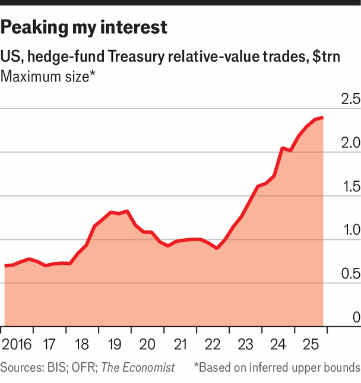

Like it or not, hedge funds are a permanent part of the Treasury market
As interest from other buyers dwindles, the trade in Treasuries increasingly relies on risky investors
June 4th 2026
THE SCALE of the Treasury market is mind-boggling. Some $1trn in securities change hands each day. Trillions more are used as collateral for short-term loans. Financial institutions of all stripes are involved: banks, central banks, high-speed traders, insurers, endowments, pension funds, hedge funds and so on.
It used to be that banks were the main facilitators of all this, acting as “market-makers” for other financial firms. As recently as 2009 about half of Treasuries with maturities of a year or more were bought at auction by the brokerage arms of investment banks, which then sold them on. But new regulations introduced after the financial crisis diminished banks’ role as intermediaries in the Treasury market, by requiring them to fund themselves with more capital to underpin such mundane transactions. Dealer banks now buy just 12% of Treasuries maturing in over a year at auction.

Another prolific buyer has helped to fill the void: hedge funds. These try to profit from Treasuries in lots of ways, but one approach, called relative value, causes particular consternation. This involves exploiting tiny discrepancies in the prices of similar assets which will converge over time. Because the differences in price are minuscule, so are the profits. To make such trades worthwhile, hedge funds pursue them at huge scale using borrowed cash. To that end, they hold $2.4trn of long exposure to Treasuries—bets that the bonds will rise in value—in the form of the securities themselves and derivatives (see chart).
The most common relative-value strategy is called the basis trade. It seeks to profit from piddling differences in price between Treasury futures (a contract to buy or sell a Treasury bond on a fixed date) and the underlying Treasury bonds themselves. Treasury futures are in huge demand from asset managers, because owning them involves less red tape than buying the bonds. That means that a given Treasury bond often trades at a fractionally lower price than the like futures contract. Citadel, ExodusPoint and other hedge funds sell futures contracts, use the proceeds to buy the relevant Treasury bonds for fractionally less, and then pocket the difference when the contract matures.
That the two assets will converge in price as they mature is a certainty, so the trade itself entails no risk. But to make it worth their while, the firms amplify their investment by borrowing heavily, which creates big risks. They typically pledge Treasuries as collateral. If the price of Treasuries falls, lenders may demand more protection. And if it falls far enough, borrowers can be forced to liquidate assets to repay their loans.
This dynamic can exacerbate the severity of swings in the Treasury market. During the dash for cash, hedge funds sold an estimated $172bn of Treasuries, contributing to the market’s seizure. Since then, volumes of Treasuries borrowed for the basis trade have risen by 160%. Should another crisis arise, the basis trade will make it only worse.
Some regulators worry about the growing weight of hedge funds in the Treasury market. In 2023 Gary Gensler, then chairman of the Securities and Exchange Commission (SEC), one of several regulators with responsibility for the Treasury market, suggested that hedge funds should be regulated like the trading arms of banks. That drew howls of opposition from the likes of Ken Griffin, the founder and CEO of Citadel.
“The mirage is that it’s the safest, deepest, most liquid market in the world,” says Anil Kashyap, a professor at the University of Chicago and a former member of the Bank of England’s financial-policy committee. “The reality on the ground is that the market now depends on people who are very highly levered being the marginal buyer of Treasuries.”
Exactly how much leverage is involved in relative-value trades is disconcertingly uncertain. The Office of Financial Research, an arm of the Treasury Department, collates information about borrowing from hedge funds’ corporate filings. It finds that, for every $26 hedge funds invest in relative-value trades, $25 are borrowed. Relative-value trades involving Treasuries, which are relatively easy to borrow against, are likely to be even more heavily leveraged.
Some analysts worry that leverage could be higher still for certain investors. To win valued business from hedge funds, banks sometimes lend them more than their collateral is worth, a practice known as a “negative haircut”. If a bank extends $110 of credit against a Treasury worth $100, that leaves no buffer if the bond falls in value. “If you’re picking up pennies in front of a steamroller, those pennies grow pretty nicely with leverage, but you still have that steamroller risk,” says Jonathan Wallen of Harvard Business School.
Hedge funds argue that all this borrowing is not as risky as it sounds. Firms may have investments that offset the risk of a sudden adverse lurch in the Treasury market. During the dash for cash, for instance, many held options that surged in value as markets tumbled. Others keep lots of cash to hand in case they suddenly need to post more collateral.
Sometimes, borrowing appears to be high on one side of the trade, but is markedly lower when the other side is considered too: a tiny or negative haircut on Treasury bonds may be combined with a more meaningful margin on the futures portion of the trade. Since the two trades usually offset one another, basis traders suggest the practice is safer than it seems. Still, according to a Fed report on financial stability last year, few of the banks lending to hedge funds actually engage in this kind of protection from blow-ups.
What is more, hedge funds were by no means the only sellers during the dash for cash. There were those supposedly reliable central bankers, who sold Treasuries to try to prop up the value of their currencies. And dull-as-ditchwater open-ended mutual funds sold an estimated $266bn of Treasuries in that quarter, considerably more than hedge funds.
In addition, hedge funds are performing a service when they pile into the basis trade, by ironing out a kink in financial markets. The voracious appetite of ordinary asset managers for Treasury futures would otherwise create a much bigger distortion. Arbitrage of this sort does not just make hedge-fund managers rich, the rich hedge-fund managers like to point out, it also makes markets more efficient.
Meanwhile, regulatory changes related to Treasuries transactions may alleviate the risks of the basis trade. At the end of this year the SEC will require much trading in Treasuries to be conducted through a clearing house, a step designed to make such transactions more reliable, by standardising collateral requirements, for instance. By mid-2027 a further slice of Treasury-related trading will be forced into clearing houses. All this will also give regulators a much clearer picture of what is happening in the Treasury market.
Research published recently by Barclays, a big British bank, argues that a change in bank regulations, too, may reduce the risk of the basis trade. Since new rules on leverage for banks were confirmed last year, giving them more leeway to grow their balance-sheets, banks have been hedging against shifts in interest rates by taking short positions in Treasury futures markets. That makes them natural counterparties to the asset managers who buy trillions of dollars of Treasury futures, and so, in turn, should lessen the opportunity for debt-bingeing hedge funds.
Some analysts have more novel proposals. Mr Kashyap, Mr Wallen, Jeremy C. Stein of Harvard University and Josh Younger of Tudor Investment Corporation, a hedge fund, suggested in research published in 2025 that the Fed itself could enter the basis trade to settle things down during moments of market turmoil. If hedge funds were dumping Treasury bonds in a panic, the Fed could buy Treasury bonds and short Treasury futures (essentially replicating what hedge funds do during normal times), which would lower the risk of market blow-ups without affecting monetary policy.
Anyway, whatever the remaining risks, as the Treasury market expands and the ranks of reliable buyers thin, regulators cannot be too choosy. Direct bidders (a category that includes all manner of investment funds) and indirect bidders (buyers acting through an intermediary) now account for a combined 75% of demand at auctions of Treasuries maturing in a year or longer, up from 45% in 2009.
The precise share of Treasuries sold to hedge funds is not known, but in private, financial officials say that the firms ensure that all the bonds on offer actually get sold, which is no small matter. Research published by the Federal Reserve last year shows that funds based in the financial haven of the Cayman Islands have become enormous players in the Treasury market, partly because of their role in the basis trade. The paper suggested that the Treasury’s data on foreign holdings of American government debt undercounted the stockpile of hedge funds in the Cayman Islands by $1.4trn in 2024. Its new creditors may have troubling flaws, but America cannot afford to turn them away.■